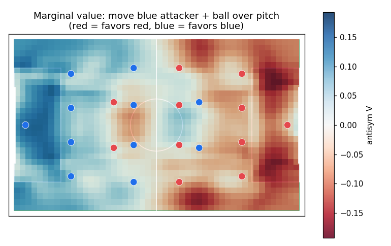

A soccer value function you can touch.
pitchperfect ports a trained neural-network value function for football — V(s), the estimate of which team scores next — into a tiny numpy package and an interactive browser demo. Drag 22 players around a real pitch and watch the model reason about danger in real time.
Open the interactive demo → View on GitHub
How it works
pitchperfect reimplements the forward pass in
numpy (the pip package) and in JavaScript (the
demo). A parity test proves all three agree to ~1e-6.
V(s) = (raw(s) − raw(swap s))/2. This
removes any residual red/blue bias and guarantees a mirror-balanced position scores
exactly 0 — the principled fix for an asymmetric trained model.
Install
pip install pitchperfect
from pitchperfect import ValueNet
net = ValueNet.load()
v = net.value(
ball=[0, 0],
blue=[[-46,0],[-30,-18], ...], # 11 [x,y] in sim coords (x∈[-50,50], y∈[-30,30])
red=[[46,0],[30,18], ...],
)
print(v) # antisymmetrized value in [-1, +1]; +1 favors blueStatus & limits
A battery of diagnostics (tools/study.py) checks the value surface against
common sense, and the model passes the clear-cut tests: an open goal reads ±0.66 to the
attacking side, a balanced shape reads exactly 0, numerical overloads favour the
overloading team, and every mirror position is the precise negative of its twin.
Known limits, since this is a research preview:
- Simulator-trained. The weights come from a symmetric 11-v-11 simulator, not real match data, so the numbers reflect that game's dynamics — a smooth, fully match-calibrated surface still needs game-calibrated simulation, larger training sets, and ablations.
- Possession-aware, and risk-averse with it. The model reads contested positions conservatively: a lone attacker with the ball against an intact block reads near 0, and a loose ball deep in the opponent half (their defenders nearest) can read mildly in their favour — recovery logic, not a territory bug. Clear the keeper or a defender and the value climbs as the chance becomes real. The flip side is a weak territorial term — "safe possession" is over-valued relative to a contested attack — which is the main thing the upstream training work (a monotonicity prior, game-calibration) is meant to fix.
Follow along on GitHub.

Above: the marginal value as a blue attacker (with the ball) is moved over the pitch, others fixed — bluer where the model rates that position higher for blue.
Why now
The World Cup is on — so here's something to play with at half-time. Recreate a famous shape, drag a striker into the channel, and see what a value function thinks.